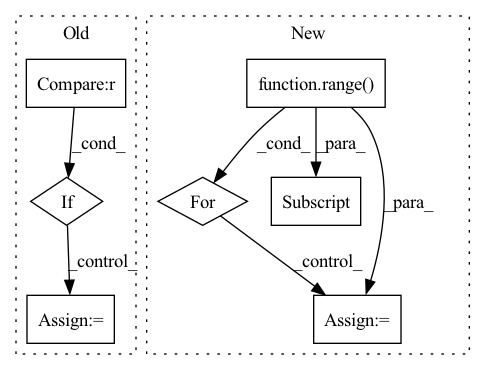

Pattern ID :2183
Before Change
batch, permutation_dim, -1
)
if self.combining_operation == "mean" :
e = iid_embeddings.mean(dim=1)
elif self.combining_operation == "sum":
e = iid_embeddings.sum(dim=1)
else:After Change
else:
combined_embedding = []
trial_counts = torch.zeros(batch, 1)
for i in range( batch):
// remove NaNs
valid_x = x[i, ~torch.isnan(x[i, :, 0] ), :]
trial_counts[i] = valid_x.shape[0]
trial_embeddings = self.trial_net(valid_x)
// apply combining operation over permutation dimensionIn pattern: SUPERPATTERN
Frequency: 4
Non-data size: 7
Instances Fragment ID: 7690453
Project Name: mackelab/sbi
Commit Name: 1352e77bdbc47aa4a4130679903b57672e48218c
Time: 2023-03-01
Author: jan.boelts@tum.de
File Name: sbi/neural_nets/embedding_nets.py
M Class Name: PermutationInvariantEmbedding
N Class Name: PermutationInvariantEmbedding
M Method Name: forward(2)
N Method Name: forward(2)
M Parent Class: nn.Module
N Parent Class: nn.Module
M File Name: sbi/neural_nets/embedding_nets.py
N File Name: sbi/neural_nets/embedding_nets.py
M Start Line: 271
M End Line: 284
N Start Line: 277
N End Line: 304
Before Change
outputs = [inters[0]]
for i, conv in enumerate(self.output_convs):
out = F.interpolate(outputs[-1], scale_factor=0.5, mode="nearest") // resize(P3td)
if i < len(self.output_convs) - 1 :
out = self.fuse([x[i+1], inters[i+1], out]) // P4in + P4td + resize(P3td)
else:
out = self.fuse([inters[i+1], out]) // P7in + resize(P6td)
outputs.append(conv(out)) // P4out = conv(P4in + P4td + resize(P3td))
return outputsAfter Change
// top-down
tds = [None] * self.num_levels
tds[-1] = x[-1]
for i in range( self.num_levels - 2, -1 , -1):
tds[i] = self.td_fuses[i]([x[i] , self.upsample(tds[i+1])]) // P6td = conv(P6in + resize(P7td))
// bottom-up
outs = [None] * self.num_levels Fragment ID: 7690468
Project Name: gau-nernst/vision-toolbox
Commit Name: 0844b6bcb142e63b09cf6ae44e5087c20d52c380
Time: 2022-04-10
Author: gau.nernst@yahoo.com.sg
File Name: vision_toolbox/necks.py
M Class Name: BiFPNLayer
N Class Name: BiFPNLayer
M Method Name: forward(2)
N Method Name: forward(2)
M Parent Class: nn.Module
N Parent Class: nn.Module
M File Name: vision_toolbox/necks.py
N File Name: vision_toolbox/necks.py
M Start Line: 163
M End Line: 180
N Start Line: 160
N End Line: 172
Before Change
x = (x - 0.5) / 0.5
shape = x.shape
n, c, h, w = shape
if c == 1 :
x = x.expand(1, 3, 1, 1)
hPad = max(0, 32 - h)
wPad = max(0, 32 - w)
x = F.pad(x, (0, wPad, 0, hPad))After Change
def forward(self, x: torch.Tensor) -> List[torch.LongTensor]:
codes = list()
latent = self._encoder(x)
for i in range( self._levels):
head = self._heads[i]
z = head(latent)
if i < self._levels - 1:
mapper = self._mappers[i]
latent = mapper(latent)
code = self._quantizers[i](z)
hard = self._deQuantizers[i](code) Fragment ID: 7690486
Project Name: xiaosu-zhu/mcquic
Commit Name: 3ca26f40dc8d00ed5fbebee4a77654f9d1d51939
Time: 2021-10-08
Author: xiaosu.zhu@outlook.com
File Name: src/mcqc/evaluation/refModel.py
M Class Name: RefEncoder
N Class Name: RefEncoder
M Method Name: forward(2)
N Method Name: forward(2)
M Parent Class: nn.Module
N Parent Class: nn.Module
M File Name: src/mcqc/evaluation/refModel.py
N File Name: src/mcqc/evaluation/refModel.py
M Start Line: 106
M End Line: 114
N Start Line: 136
N End Line: 150
Before Change
// collapse dimensions to BSx512 (resnet o/p)
x = x.view(x.size(0), -1)
// Unsqueeze for sequence length
if t == 0 :
gru_output, h_n = self.rnn(x.unsqueeze(1))
else:
gru_output, h_n = self.rnn(x.unsqueeze(1), h_n)
// output dim: BSx1 and Squeeze sequence length after completing GRU stepAfter Change
output_seq = torch.stack(batched_output_per_clip, dim=0)
gru_output, h_n = self.rnn(output_seq.unsqueeze(1))
// gru_output = gru_output.squeeze(1)
for i in range( gru_output.size(0)):
hr = self.gru_fc_out(gru_output[i, :, :] )
// // hr = hr * 25.0
hr_per_clip.append(hr.flatten())
Fragment ID: 7690465
Project Name: anweshcr7/rhythmnet
Commit Name: 0f9fc9b96933c04f723fbfa5b80cdf1a398828c3
Time: 2021-03-14
Author: anwesh.marwade@beyondsports.nl
File Name: src/models/rhythmNet.py
M Class Name: RhythmNet
N Class Name: RhythmNet
M Method Name: forward(3)
N Method Name: forward(3)
M Parent Class: nn.Module
N Parent Class: nn.Module
M File Name: src/models/rhythmNet.py
N File Name: src/models/rhythmNet.py
M Start Line: 33
M End Line: 56
N Start Line: 33
N End Line: 64